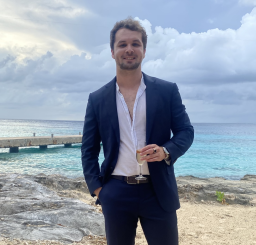
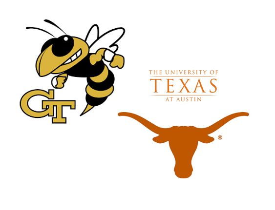

About Me
Education
I graduated with my B.S. in Biomedical Engineering from the Cockrell School of Engineering at the University of Texas at Austin in 2016. My dual specializations were in Biomolecular and Cellular Engineering and Biomedical Instrumentation and Optics. I also completed an additional foundations certificate program through the McCombs School of Business. After about 5 years in industry, I decided to return to school, part-time and online, at the Georgia Institute of Technology (OMSCS). I'm currently pursuing a Masters in Computer Science and on-track to graduate May of 2023.
 During my undergraduate, I also participated in research labs within the Biomedical Engineering Department, including assistant positions in Dr. Laura Suggs Lab for Cardiovascular Tissue Engineering and Dr. Chong Xie's lab for nano-neural interfaces. During the summer periods, I held an internship at HMS Corp. as an ETL (Extract, Transfer, Load) intern, and two separate internships at Luminex Corp. as a Biomedical Engineering intern. My final year of college culminated in a Capstone Project associated with Asuragen.
Curriculum Highlights
- Operating Systems
- Machine Learning
- Deep Learning
- High Performance Comp. Architecture
- Artificial Intelligence for Robotics
- Information Security
- Advanced Linear Algebra for Computing
- Video Game AI
- Graduate Algorithms
- Digital Signal Processing
- Embedded Systems
- Software Design and Implementation
- Biomedical Instrumentation
- Signals and Systems Analysis
- Biomedical Modelling
- Advanced Internet Applications
Professional Background
Career Brief
My first job out of college brought me out of Austin to Dallas, where I worked as a Project Engineer for St. Jude Medical (which during the course of my employment was acquired by Abbott). I worked with many great people and learned a great deal about Medical Devices and Neurostimulation in particular, but ultimately decided to move westward and back into the world of Biomedical Diagnostics as I had particularly enjoyed my internships with Luminex Corp. and my Capstone Design experience with Asuragen.
Triple Ring Technologies gave me my first introduction to Biotech in the bay, and I give them a lot of credit for providing really excellent mentorship and career development. As a BioEngineering Consultant I had the chance to work on a myriad of different projects, with a diverse and talented pool of engineers and clients. It was here that I started to spend much less of my time in the lab, and much more time, working cross-functionally to support the entire product. By the end of my time here, I was much more of a Systems Engineer than a BioEngineer. Triple Ring also gave me the opportunity to start applying my Software abilities to my industry work.
I formally moved into Systems Engineering with the very smart and very hard-working folk at Avails Medical and later, Sartorius (formerly ForteBio). In this capacity I was exposed to a broader spectrum of Verification, Validation, and Product Development strategies (Requirements, Design Practices, etc.). I also had more freedom to bridge gaps and develop innovative solutions for some really important technical hurdles. I realized that I was quite a competent programmer and really adept at bridging communication gaps between the Hardware and Software teams that I worked with. This prompted me to enroll in Graduate School part time and online at Georgia Tech to get stronger fundamentals in Computer Science.
Ultimately, I was able to leverage my background and my education into a Software Development Engineering position with Amazon Alexa's Health and Wellness team. Here, I was able to learn formal Software Engineering from some of the best and brightest in the field. We practiced development for various Health and Wellness apps, some of which would service thousands of requests per second. Unfortunately, in Amazon's restructuring of the Devices team, the Health and Wellness team was retired and I am now searching for my next opportunity!
Proficiencies
Here's a collection of languages, tools, and frameworks I've worked with:
Cources and Certifications
I hold the following certifications:
I have completed the following courses: